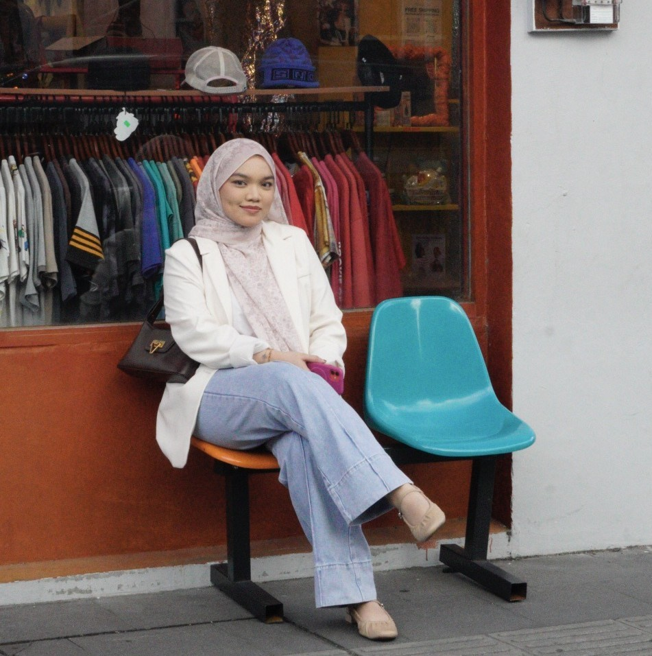

Hello, I'm
I create beautiful and functional websites that help businesses grow and succeed in the digital world.

I am a final-year Information Security student at Universiti Tun Hussein Onn Malaysia (UTHM) with a passion for building secure and reliable systems. I am currently completing my industrial training as an IT Intern at UTHM Education & Training, where I worked on developing a full-stack system for organizational use.
During my academic journey, I have been involved in multiple system development projects that strengthened my skills in backend integration and application security. I have implemented security features such as Google reCAPTCHA and multi-factor authentication (MFA) to improve system protection.
My final year project focused on developing an Email Spoofing Detection Tool using domain-based authentication, reflecting my interest in cybersecurity, secure system design, and threat detection. I am eager to apply my technical knowledge in a full-time role within cybersecurity or software development while continuing to learn and grow professionally.
My professional journey and career highlights
Here are some of my recent works that showcase my skills and creativity
A web-based academic staff and administrative management system.
Email Spoofing Detection Tool Using Domain-Based Authentication.